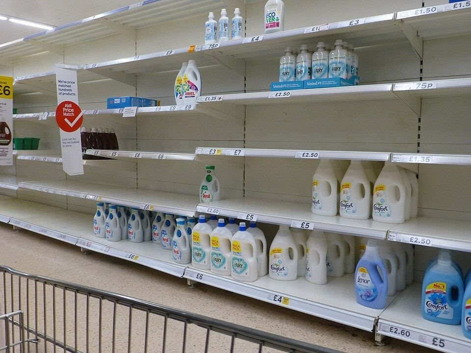
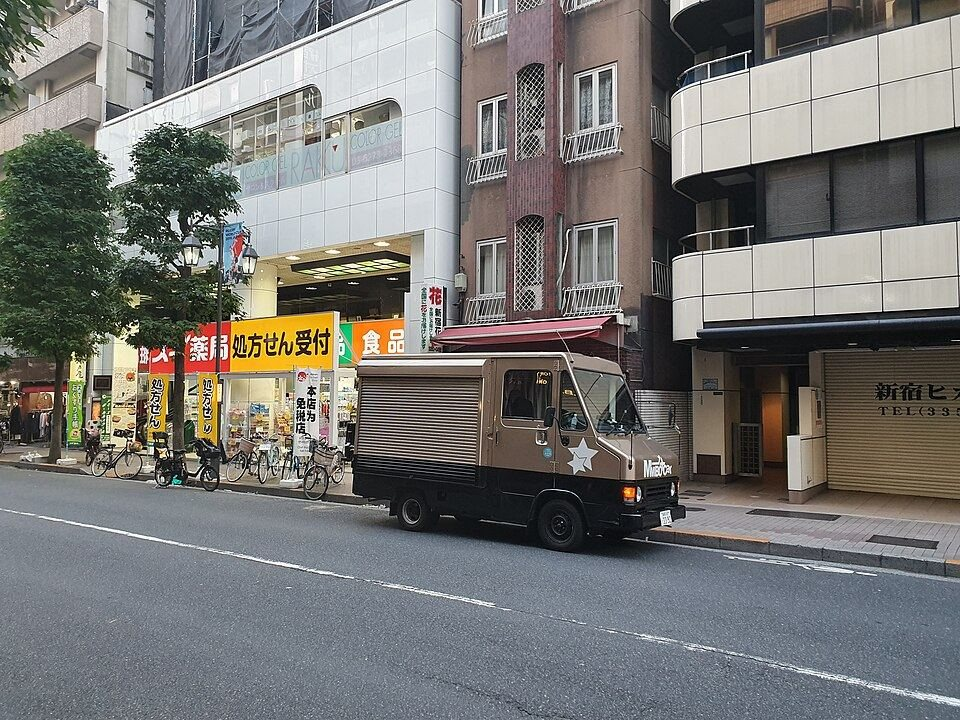

KI-Labor, Stand 22.11.2026
Kartenset: Echt oder KI? Für Eltern und Kind
Zwölf Bildkarten auf den Seiten 2 und 3: sechs echte Fotos, sechs KI-Bilder. Sie spielen zu zweit, Sie und Ihr Kind. Es braucht dafür kein Gerät. Die Auflösung steht auf der letzten Seite.
Spielregeln für zwei
- Vorbereiten. Drucken Sie die Seiten 2 und 3 aus. Ausschneiden ist möglich, Sie können aber auch direkt am Blatt raten. Halten Sie Stift und das Punkteblatt unten bereit.
- Abwechselnd raten. Ihr Kind beginnt mit Karte 1, Sie folgen mit Karte 2, dann wieder Ihr Kind, bis Karte 12. Wer an der Reihe ist, sagt laut: „echt“, „KI“ oder „unklar“, und nennt einen Hinweis. Die andere Person darf widersprechen.
- Notieren. Tragen Sie die Antwort im Punkteblatt ein: E für echt, K für KI, U für unklar. Noch nicht auflösen.
- Auflösen und Punkte zählen. Nach Karte 12 lösen Sie auf der letzten Seite gemeinsam auf. Jede richtige Antwort ist ein Punkt. „Unklar“ ist erlaubt und zählt null Punkte.
- Sprechen. Reden Sie bei jeder Karte kurz darüber, auch wenn die Antwort stimmte. Nicht der Punktestand ist wichtig, sondern was Sie beide gesehen haben.
Gesprächsfragen
- „Woran hast du es gesehen?“
- „Was hat dich zweifeln lassen?“
- „Könnte ein echtes Foto diese Stelle auch haben?“
- „Wie würdest du prüfen, woher das Bild kommt?“
Erwachsene liegen bei guten KI-Bildern oft ebenso daneben wie Kinder. Eine sichere Erkennung gibt es nicht. Wichtig ist, dass Ihr Kind vorsichtig bleibt und nachfragt: Wer hat das Bild veröffentlicht, und was berichten andere dazu?
Punkteblatt
| 1 | 2 | 3 | 4 | 5 | 6 | 7 | 8 | 9 | 10 | 11 | 12 | |
|---|---|---|---|---|---|---|---|---|---|---|---|---|
| Kind | ||||||||||||
| Sie | ||||||||||||
| Richtig |
Punkte Kind: ______ Punkte Sie: ______
Echt oder KI? im KI-Labor
ki-laborKarten 1 bis 6
 1
1 2
23
 4
45
 6
6Karten 7 bis 12

7 8
8 9
9
10 11
11 12
12Auflösung für Eltern
Sechs Karten zeigen echte Fotos, sechs sind KI-Bilder. Die Hinweise sind Anhaltspunkte, kein Beweis. Schauen Sie erst nach, wenn alle zwölf Karten geraten sind.
| 1 | Echt | Containerhof mit Lastwagen. Schrift auf dem Container lesbar und logisch. Foto: Yinan Chen, Public Domain, Wikimedia Commons. |
| 2 | KI-Bild | Bergsee bei Sonnenaufgang. Licht wie auf einem Poster, Spiegelung zu gleichmäßig. Keine Hände, keine Schrift. KI-Bild, selbst erzeugt (Bildmodell, 22.11.2026). |
| 3 | KI-Bild | Fuchs in einer Herbstwiese. Fell und Wiese wirken wie gemalt, Hintergrund weich und sauber. KI-Bild, selbst erzeugt (Bildmodell, 22.11.2026). |
| 4 | Echt | Emaille-Tassen auf einem Tisch. Stark gefiltert und unscharf, aber echt. Foto: André Freitas andrekerygma, CC0, Wikimedia Commons. |
| 5 | Echt | Neubau und Straße in der Ferne. Viele kleine Details, lesbare Schilder. Foto: Retired electrician, CC0, Wikimedia Commons. |
| 6 | KI-Bild | Spaghetti mit Tomatensoße. Soße und Nudeln sehr gleichmäßig, Licht wie im Werbefoto, Wasserglas prüfen. KI-Bild, selbst erzeugt (Bildmodell, 22.11.2026). |
| 7 | Echt | Leere Regale im Laden. Preisschilder lesbar und stimmig, Unordnung wie im echten Laden. Foto: citytransportinfo, CC0, Wikimedia Commons. |
| 8 | KI-Bild | Fachwerkhaus. Fenster, Balken und Dach fast zu regelmäßig, Ränder prüfen. KI-Bild, selbst erzeugt (Bildmodell, 22.11.2026). |
| 9 | KI-Bild | Fahrrad an einer Ziegelwand. Sehr sauber, Spiegelung im Fenster und Speichen prüfen. KI-Bild, selbst erzeugt (Bildmodell, 22.11.2026). |
| 10 | Echt | Kleintransporter in einer Einkaufsstraße. Viele Schilder mit lesbarer Schrift, dichter Hintergrund. Foto: Syced, CC0, Wikimedia Commons. |
| 11 | Echt | Baustelle in einer Stadtstraße. Verkehrsschild, Absperrband und Häuser im Hintergrund stimmig, viele kleine Details. Foto: Fons Heijnsbroek, CC0, Wikimedia Commons. |
| 12 | KI-Bild | Regentropfen an einer Haltestelle. Tropfen sehr gleichmäßig, Lichter auf der Straße passen nicht ganz. KI-Bild, selbst erzeugt (Bildmodell, 22.11.2026). |
Alle Angaben stammen aus dem KI-Labor, Stand 22.11.2026. Kein Rechtsrat.